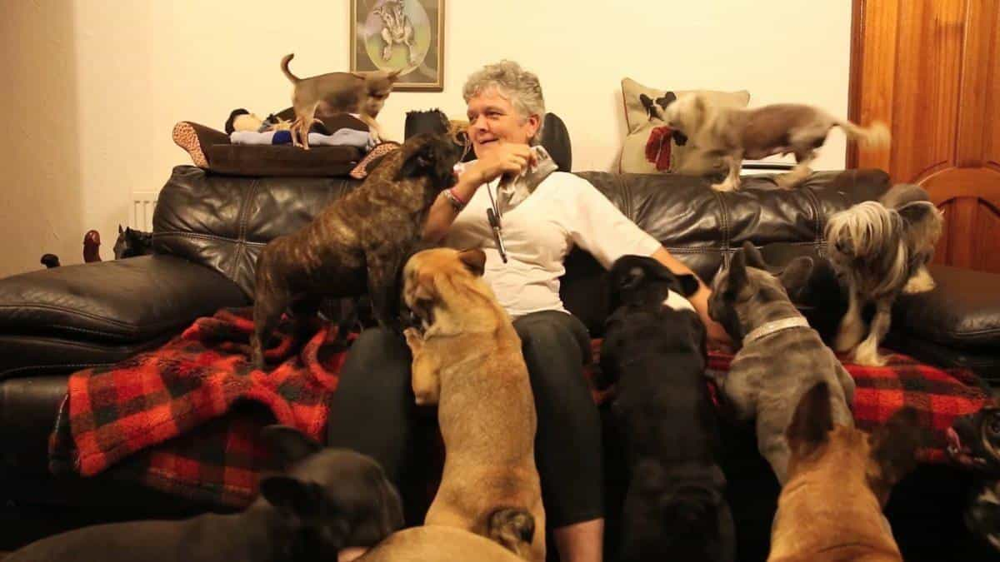

Kyle is an entrepreneur and nomad who has been living abroad since 2016. He blogs at This Is Trouble. Follow him on Facebook.


When I was living in Kiev, Ukraine, I was spending a lot of time at business lunch. Essentially, it was a 3-5 course lunch time meal that restaurants in Kiev would do to entice people to come in and eat. Those 3-5 courses would usually cost about $3-$7 when it was all said in done. The most expensive restaurant in the city offered it for $6. Juice, bread, salad or soup, and a main course. It was a killer deal. My friends and I would go to one of these restaurants Monday through Friday, every day.
One of the major topics that always came up was the way that so many things in our modern world are simulated. Things that used to be typical in older times are now existent in our current culture, in a sort of fantasy. To me, there were five things that now exist in the world that basically simulate what people in the past used to do.
When we weren’t talking about how to handle Ukrainian women and the state of our dating lives, we had a lot of time to talk about life, how things have evolved in the last few years, and to bring these points into a more concise view of the world and how they have directly impacted modern day men. They deserve as much credit as I do for this post.
In short, these things all result in lower testosterone, depression, and a multitude of other symptoms that all can be traced back to what we’d consider to be the problems of modern society. These problems aren’t just pertinent to men, however.

Gladiators used to fight in the Roman Coliseum for sport. These days, it’s simulated with things like football. “Violence and blood,” so to speak. Now, don’t get me wrong–if you’re active and participating in sports, it’s great. But it’s a substitute for literally going to war and killing off other tribes. Perhaps this is the one simulation on the list that isn’t a bad thing, on paper. Everybody should lead active and healthy lives. But then you look around and realize that many men are simply being spectators to sport.
Spending twelve hours on Sunday watching the NFL as a fan. It’s scary that the games kick off at 1pm EST and end at nearly midnight, if you watch the late game. Major League Baseball has 162 games in their season. I know that quite a few guys out there watch all 162 games of their respective teams.
It’s a simulation of replacing the long lost battles fought against other tribes. Instead, your “tribe” paints colors and logos on your face and goes to “war” with the other team’s fans. I don’t think you need to cut out sports (watching), and definitely don’t think they are 100% poison. Everybody needs a way to unplug once in a while. It’s not the worst vice you could have.
However, you must cut it down to manageable bits each week. Watch your favorite team’s football game. And when it’s done, it’s done. Don’t let it affect your mood for the rest of the week (or even day).
Everybody by now knows that porn is really, really bad for you. But people aren’t stopping their use of it.
Many men in Asian countries have all but thrown in the towel on having any sort of love life. They would rather use porn and blow-up dolls that simulate sex—pretty damn close to the real thing, I hear. Western men would rather stay home and jerk off to increasingly-disturbing levels of porn rather than travel abroad to remote places to meet Serbian women or Colombian girls. Hell, with the advancement of technology, blow-up dolls may be far more skilled at giving head than real girls in the not-so-distant future. Looking at the doll in the photo above is scary. You can tell she’s fake if you look closely, but from afar, I could be fooled.
With men, it’s all about the end release when it comes to sex. Women use porn (or at least say they do) at a less drastic rate. They also don’t seem to have quite the addiction to it. That’s because for women, the sex is all about the journey through it. It doesn’t matter if they have an orgasm. When you can simulate sex and still get the end release, it’s an effective simulation as opposed to the real thing—which isn’t that hard to get.

Dogs are a man’s best friend, but the way some people treat their pets is utterly pathetic. In a world where people are repeatedly being told now to have children (or to put it off in the case of women), they are finding other way’s to simulate raising children.
The entire biological point of our existence is to pass on our genetics. And yet people are being told that they really shouldn’t. Instead, they get dogs that fit into purses. And the sad part is that then those people become so reliant on the dogs that it’s the humans that need the dogs just so they can muster the courage to get on an airplane.
It’s disturbingly easy to get an emotional support animal these days.
I’ve suffered from video game addiction myself. It’s a real thing. And I know exactly what achievement porn is. Video games suck you in now and don’t let you out. As men, we do work to achieve stuff. We get good feelings and a sense of accomplishment from it.
Video games take it up a level by adding fantasy to those achievements. Even though you’re pouring hours and hours into something pointless, you feel good because it’s accomplishment. It’s a false sense of working hard. The sad thing is, if you took those ten hours playing video games (a day) for achievement porn, and spent just three of them on building a business–you’d have a hell of a lot to show.
Food is a way to numb the pain for a lot of people. It’s a distraction from the day to day life of the office grind. You could throw alcohol into this discussion, too.
People are so disconnected from each other on a personal level, that’s it’s more comfortable to eat food instead of confiding in your friends and peers. Combine this with the sedentary lifestyle of the 9-5 grind, television (see #1), and it’s a recipe for disaster. It all goes full circle.
You’re now addicted and dependent on food for numbing pain. You have a “tribe” which just makes you sit on the couch more and more. You have a pet that replaces offspring, and a doll that replaces a lover.
That’s the life of simulation. And the worst thing? Most will never even realize what they’re doing. It’s time to wake up.
If you want to learn how to meet more girls online (ironic given the subject of this post, I admit)—check out my book, Cracking OkCupid. For more travel, game, and digital nomad advice, visit my blog at This Is Trouble.
Read More: 7 Times You Should Do The Opposite Of What People Tell You